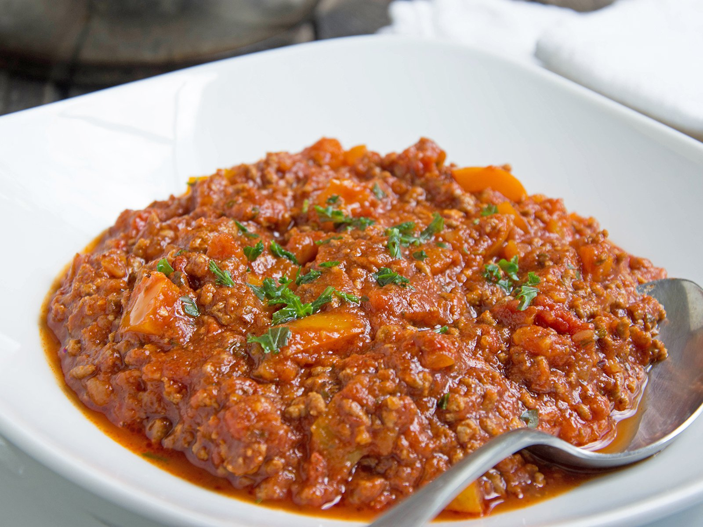

Chili con Carne ohne Bohnen

| 600 g fettreduziertes Hackfleisch |
| 500 g gehackte Tomaten |
| 250 ml Rinderbrühe |
| 40 g eingelegte Jalapeno-Scheiben |
| 2 Zwiebel(n) |
| 2 Zehe(n) Knoblauch |
| 2 EL Tomatenmark |
| 1 EL Butter zum Anbraten |
| 1 TL Paprikapulver |
| 1 TL Oregano, gerebelt |
| 2 Prise(n) Salz |
| 1 TL Chilipulver |
| 2 Prise(n) Pfeffer |
Zubereitung
1. Schritt
40g eingelegte Jalapeño-Scheiben, 2 Zwiebel, 2 Knoblauchzehen.
Die Zwiebel, den Knoblauch und die Jalapeño-Scheiben würfeln.
Die Jalapeño-Würfel vorerst beiseite stellen. Die Zwiebel und den Knoblauch in einen großen Topf geben.
2. Schritt
1 EL Butter, 1 TL Paprikapulver, 1 TL Oregano, gerebelt, 1 TL Chilipulver
Etwas Butter in dem Topf mit den Zwiebeln und dem Knoblauch zerlassen und beides etwa 3-4 Minuten bei mittel-hoher Hitze glasig anbraten.
Anschließend die Gewürze mit in den Topf geben und ebenfalls kurz (etwa 1 Minute) mit anbraten.
3. Schritt
600g fettreduziertes Hackfleisch.
Danach das Hackfleisch hinzugeben und etwa 10 Minuten anbraten, bis es nicht mehr rosa ist. Währenddessen die Rinderbrühe nach Packungsanweisung anrühren.
4. Schritt
1 Dose gehackte Tomaten (500g), 250ml Rinderbrühe, 2 EL Tomatenmark, Jalapeño-Würfel
Anschließend die gehackten Tomaten, das Tomatenmark, die Rinderbrühe und die Jalapeño-Würfel hinzugeben und alles bei mittlerer Hitze für etwa 10-15 Minuten köcheln lassen.
40g eingelegte Jalapeño-Scheiben, 2 Zwiebel, 2 Knoblauchzehen.
Die Zwiebel, den Knoblauch und die Jalapeño-Scheiben würfeln.
Die Jalapeño-Würfel vorerst beiseite stellen. Die Zwiebel und den Knoblauch in einen großen Topf geben.
2. Schritt
1 EL Butter, 1 TL Paprikapulver, 1 TL Oregano, gerebelt, 1 TL Chilipulver
Etwas Butter in dem Topf mit den Zwiebeln und dem Knoblauch zerlassen und beides etwa 3-4 Minuten bei mittel-hoher Hitze glasig anbraten.
Anschließend die Gewürze mit in den Topf geben und ebenfalls kurz (etwa 1 Minute) mit anbraten.
3. Schritt
600g fettreduziertes Hackfleisch.
Danach das Hackfleisch hinzugeben und etwa 10 Minuten anbraten, bis es nicht mehr rosa ist. Währenddessen die Rinderbrühe nach Packungsanweisung anrühren.
4. Schritt
1 Dose gehackte Tomaten (500g), 250ml Rinderbrühe, 2 EL Tomatenmark, Jalapeño-Würfel
Anschließend die gehackten Tomaten, das Tomatenmark, die Rinderbrühe und die Jalapeño-Würfel hinzugeben und alles bei mittlerer Hitze für etwa 10-15 Minuten köcheln lassen.
Rezept erstellt von
 Erdal
Erdal